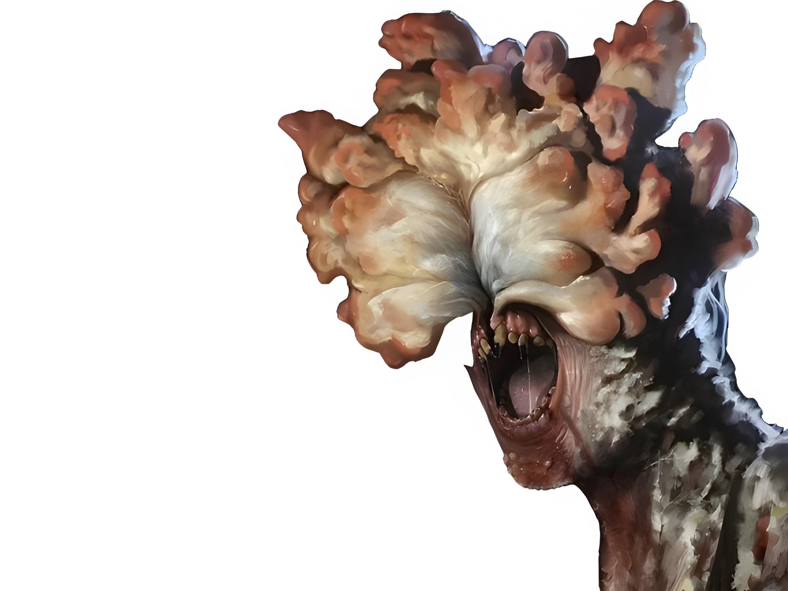
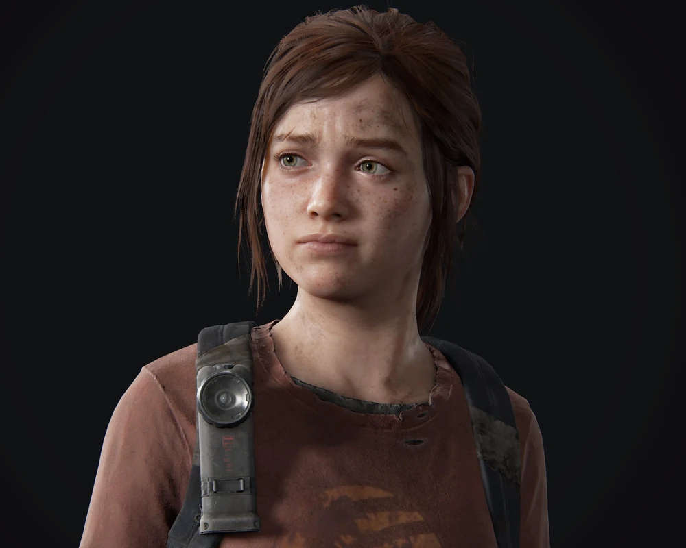
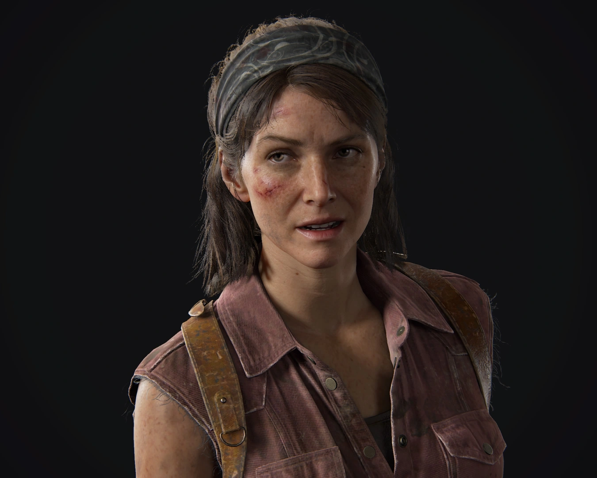
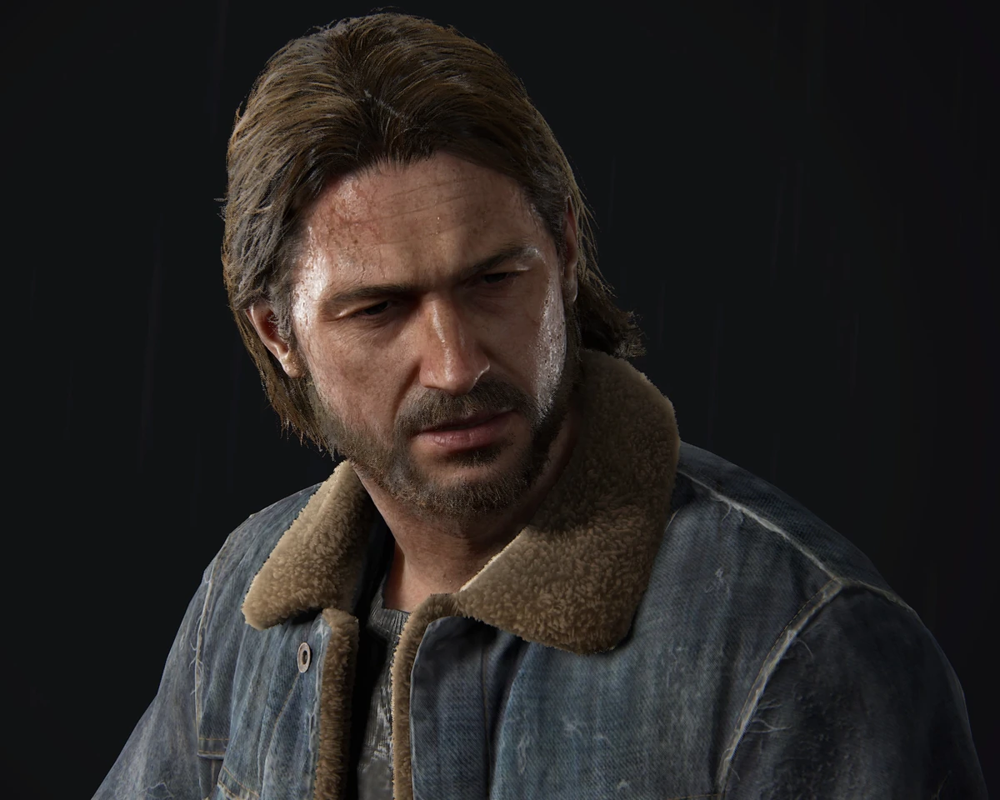
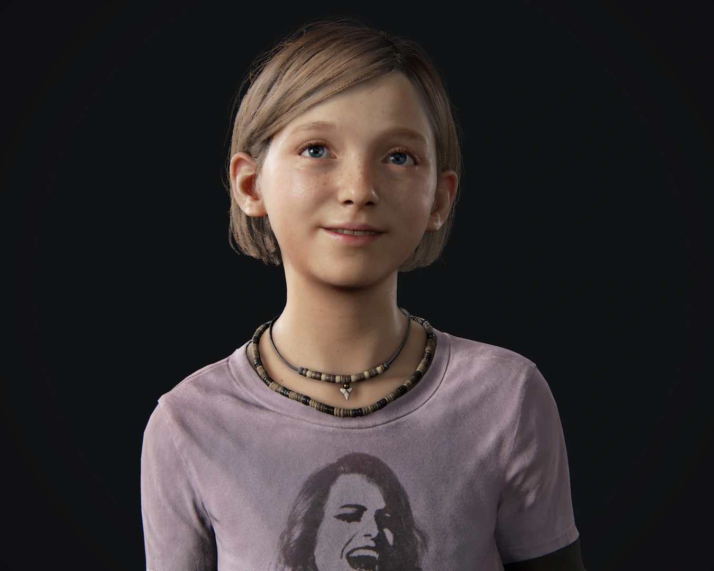
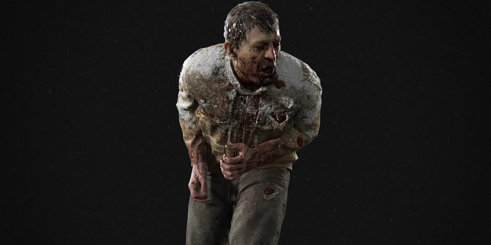
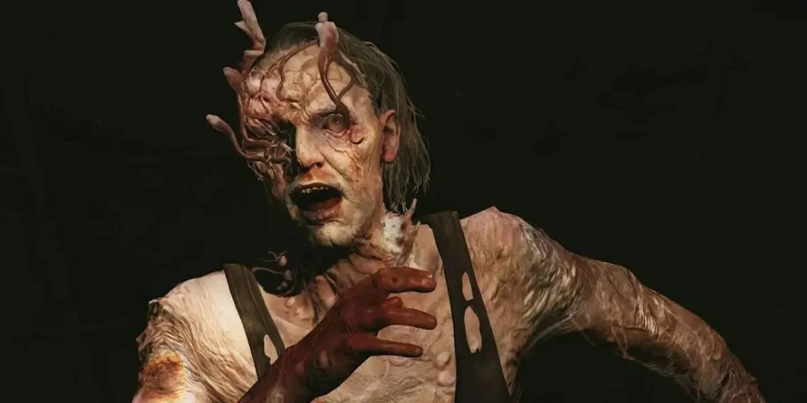
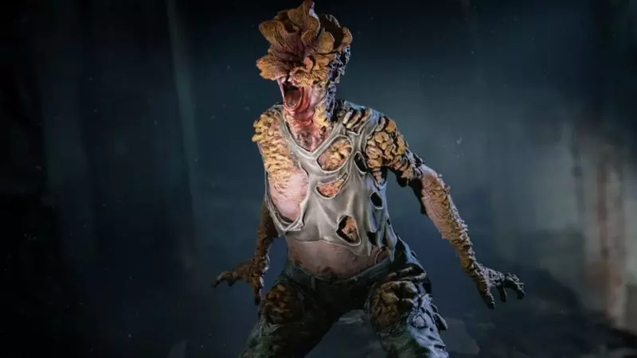
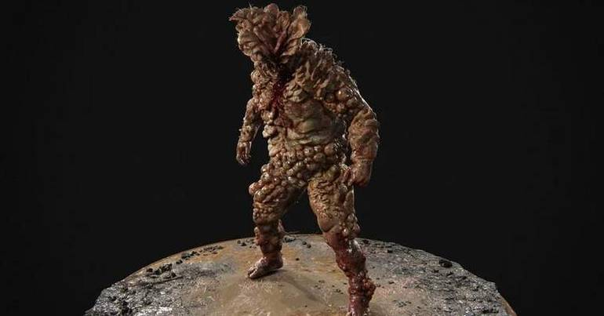

é só o começo
Sobre o Jogo
Joel, um homem marcado por perdas e traumas após perder sua filha no início do surto, encontra em Ellie uma nova razão para continuar vivendo. Já Ellie, criada em um mundo sem esperança, aprende a confiar e enxergar em Joel uma figura paterna . Conforme a jornada avança, a conexão entre eles cresce de forma natural e emocionante, transformando completamente suas vidas.
Com uma narrativa intensa, momentos marcantes e personagens profundamente humanos, The Last of Us vai muito além de um jogo sobre “zumbis”.

Vagalumes
Fedra
Principais Personagens

Joel Miller
Marcado pela perda da filha durante os primeiros dias do surto, Joel passou anos sobrevivendo através da violência e de escolhas difíceis em um mundo completamente destruído.

Ellie Williams
Crescendo em meio ao caos da infecção, Ellie descobre possuir uma rara imunidade que pode representar uma chance real de esperança para o futuro da humanidade.

Tess
Acostumada aos perigos das zonas de quarentena, Tess trabalhou durante anos ao lado de Joel realizando operações de contrabando para garantir sua sobrevivência.

Bill
Vivendo completamente isolado, Bill transformou sua cidade em uma enorme armadilha enquanto utilizava sua experiência para sobreviver longe de outras pessoas.

Tommy Miller
Após anos enfrentando diferentes grupos de sobreviventes, Tommy, irmão de joel, tenta construir uma vida segura ao lado de pessoas que ainda acreditam em reconstrução.

Sarah Miller
Filha de Joel, Sarah esteve presente durante os primeiros momentos do colapso da sociedade e marcou profundamente a vida do pai após o início do surto.

Marlene
Como líder dos Vaga-Lumes, Marlene dedica sua vida à busca por uma possível cura enquanto enfrenta os perigos causados pelo colapso da humanidade.
Classes de Infectados

Corredor
O fungo assume o controle do cérebro. Mantêm a aparência humana, mas perdem a razão e atacam com extrema agressividade. São muito rápidos e possuem visão perfeita mas são vulneráveis a ataques furtivos.

Perseguidor
O fungo começa a criar placas rígidas no rosto e corpo. Eles combinam a velocidade dos corredores com a astúcia, preferindo ficar nas sombras, espreitar e emboscar suas vítimas em vez de atacar de frente.

Estalador
A infecção toma conta da cabeça, destruindo completamente a visão. Compensam a cegueira usando uma audição superdesenvolvida e ecolocalização. São mortais em ataques de curta distância.

Baiacu
Raros e perigosos, o fungo cria uma blindagem espessa de esporos por todo o corpo. São extremamente lentos, mas possuem força sobre-humana. Além disso, lançam bolsas de ácido explosivo contra os personagens.